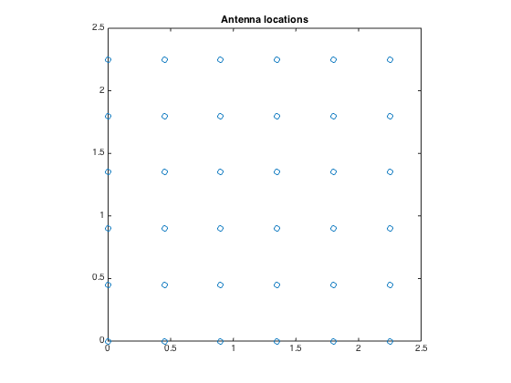
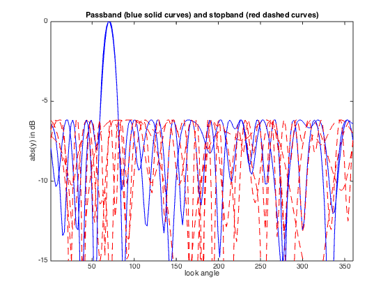
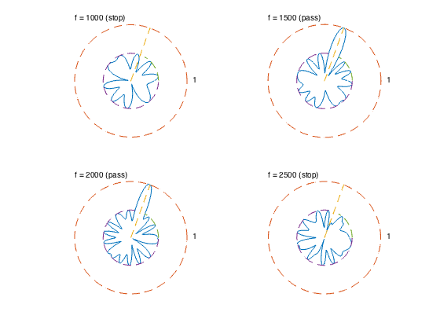

% "Antenna array pattern synthesis via convex optimization" % by H. Lebret and S. Boyd % (figures are generated) % % Designs a broadband antenna array with the far-field wave model such that: % - it minimizes sidelobe level outside the beamwidth of the pattern % - it has a unit sensitivity at some target direction and for some frequencies % % This is a convex problem (after sampling it can be formulated as an SOCP). % % minimize max |y(theta,f)| for theta,f outside the desired region % s.t. y(theta_tar,f_tar) = 1 % % where y is the antenna array gain pattern (complex function) and % variables are w (antenna array weights or shading coefficients). % Gain pattern is a linear function of w: y(theta,f) = w'*a(theta,f) % for some a(theta,f) describing antenna array configuration and specs. % % Written for CVX by Almir Mutapcic 02/02/06 % select array geometry ARRAY_GEOMETRY = '2D_UNIFORM_LATTICE'; % ARRAY_GEOMETRY = '2D_RANDOM'; %******************************************************************** % problem specs %******************************************************************** P = 2; % number of filter taps at each antenna element fs = 8000; % sampling rate = 8000 Hz T = 1/fs; % sampling spacing c = 2000; % wave speed theta_tar = 70; % target direction half_beamwidth = 10; % half beamwidth around the target direction f_low = 1500; % low frequency bound for the desired band f_high = 2000; % high frequency bound for the desired band %******************************************************************** % random array of n antenna elements %******************************************************************** if strcmp( ARRAY_GEOMETRY, '2D_RANDOM' ) % set random seed to repeat experiments rand('state',0); % uniformly distributed on [0,L]-by-[0,L] square n = 20; L = 0.45*(c/f_high)*sqrt(n); % loc is a column vector of x and y coordinates loc = L*rand(n,2); %******************************************************************** % uniform 2D array with m-by-m element with d spacing %******************************************************************** elseif strcmp( ARRAY_GEOMETRY, '2D_UNIFORM_LATTICE' ) m = 6; n = m^2; d = 0.45*(c/f_high); loc = zeros(n,2); for x = 0:m-1 for y = 0:m-1 loc(m*y+x+1,:) = [x y]; end end loc = loc*d; else error('Undefined array geometry') end %******************************************************************** % construct optimization data %******************************************************************** % discretized grid sampling parameters numtheta = 180; numfreqs = 6; theta = linspace(1,360,numtheta)'; freqs = linspace(500,3000,numfreqs)'; clear Atotal; for k = 1:numfreqs % FIR portion of the main matrix Afir = kron( ones(numtheta,n), -[0:P-1]/fs ); % cos/sine part of the main matrix Alocx = kron( loc(:,1)', ones(1,P) ); Alocy = kron( loc(:,2)', ones(1,P) ); Aloc = kron( cos(pi*theta/180)/c, Alocx ) + kron( sin(pi*theta/180)/c, Alocy ); % create the main matrix for each frequency sample Atotal(:,:,k) = exp(2*pi*i*freqs(k)*(Afir+Aloc)); end % single out indices so we can make equalities and inequalities inbandInd = find( freqs >= f_low & freqs <= f_high ); outbandInd = find( freqs < f_low | freqs > f_high ); thetaStopInd = find( theta > (theta_tar+half_beamwidth) | ... theta < (theta_tar-half_beamwidth) ); [diffClosest, thetaTarInd] = min( abs(theta - theta_tar) ); % create target and stopband constraint matrices Atar = []; As = []; % inband frequencies constraints for k = [inbandInd]' Atar = [Atar; Atotal(thetaTarInd,:,k)]; As = [As; Atotal(thetaStopInd,:,k)]; end % outband frequencies constraints for k = [outbandInd]' As = [As; Atotal(:,:,k)]; end %******************************************************************** % optimization problem %******************************************************************** cvx_begin variable w(n*P) complex minimize( max( abs( As*w ) ) ) subject to % target direction equality constraint Atar*w == 1; cvx_end % check if problem was successfully solved disp(['Problem is ' cvx_status]) if ~strfind(cvx_status,'Solved') return end fprintf(1,'The minimum sidelobe level is %3.2f dB.\n\n',... 20*log10(cvx_optval) ); %******************************************************************** % plots %******************************************************************** figure(1); clf; plot(loc(:,1),loc(:,2),'o') title('Antenna locations') axis('square') % plots of array patterns (cross sections for different frequencies) figure(2); clf; clr = { 'r' 'r' 'b' 'b' 'r' 'r' }; linetype = {'--' '--' '-' '-' '--' '--'}; for k = 1:numfreqs plot(theta, 20*log10(abs(Atotal(:,:,k)*w)), [clr{k} linetype{k}]); hold on; end axis([1 360 -15 0]) title('Passband (blue solid curves) and stopband (red dashed curves)') xlabel('look angle'), ylabel('abs(y) in dB'); hold off; % cross section polar plots figure(3); clf; bw = 2*half_beamwidth; subplot(2,2,1); polar_plot_ant(abs( Atotal(:,:,2)*w ),theta_tar,bw,'f = 1000 (stop)'); subplot(2,2,2); polar_plot_ant(abs( Atotal(:,:,3)*w ),theta_tar,bw,'f = 1500 (pass)'); subplot(2,2,3); polar_plot_ant(abs( Atotal(:,:,4)*w ),theta_tar,bw,'f = 2000 (pass)'); subplot(2,2,4); polar_plot_ant(abs( Atotal(:,:,5)*w ),theta_tar,bw,'f = 2500 (stop)');
Calling SDPT3 4.0: 4244 variables, 1205 equality constraints
For improved efficiency, SDPT3 is solving the dual problem.
------------------------------------------------------------
num. of constraints = 1205
dim. of socp var = 3180, num. of socp blk = 1060
dim. of linear var = 1060
dim. of free var = 4 *** convert ublk to lblk
*******************************************************************
SDPT3: Infeasible path-following algorithms
*******************************************************************
version predcorr gam expon scale_data
NT 1 0.000 1 0
it pstep dstep pinfeas dinfeas gap prim-obj dual-obj cputime
-------------------------------------------------------------------
0|0.000|0.000|1.4e+03|5.1e+02|2.3e+06|-3.347296e-10 0.000000e+00| 0:0:00| spchol 1 1
1|0.983|0.980|2.4e+01|1.1e+01|3.9e+04|-1.972369e-01 -6.471071e+01| 0:0:00| spchol 1 1
2|0.989|0.998|2.7e-01|5.3e-02|5.1e+02|-8.700852e-03 -6.399180e+01| 0:0:01| spchol 1 1
3|1.000|1.000|8.6e-06|3.0e-03|3.0e+01|-7.337485e-03 -3.035084e+01| 0:0:01| spchol 1 1
4|1.000|0.271|9.0e-06|2.3e-03|2.2e+01|-2.011600e-02 -2.228955e+01| 0:0:01| spchol 1 1
5|1.000|0.345|3.7e-05|1.5e-03|1.5e+01|-3.155375e-02 -1.474730e+01| 0:0:02| spchol 1 1
6|1.000|0.383|8.4e-06|9.3e-04|9.2e+00|-4.319093e-02 -9.198513e+00| 0:0:02| spchol 1 1
7|1.000|0.376|2.6e-06|5.8e-04|5.7e+00|-5.559634e-02 -5.802970e+00| 0:0:02| spchol 1 1
8|1.000|0.219|7.2e-07|4.5e-04|4.5e+00|-6.739876e-02 -4.577737e+00| 0:0:02| spchol 1 1
9|1.000|0.222|4.8e-07|3.5e-04|3.5e+00|-7.687828e-02 -3.623245e+00| 0:0:03| spchol 1 1
10|1.000|0.221|3.2e-07|2.8e-04|2.8e+00|-8.816772e-02 -2.892067e+00| 0:0:03| spchol 1 2
11|1.000|0.240|2.3e-07|2.1e-04|2.2e+00|-1.034967e-01 -2.288910e+00| 0:0:03| spchol 1 2
12|0.891|0.232|1.4e-07|1.6e-04|1.7e+00|-1.250283e-01 -1.859946e+00| 0:0:04| spchol 1 2
13|0.643|0.239|9.5e-08|1.2e-04|1.4e+00|-1.494393e-01 -1.534445e+00| 0:0:04| spchol 2 2
14|0.658|0.207|4.7e-08|9.7e-05|1.1e+00|-1.885038e-01 -1.323191e+00| 0:0:04| spchol 2 2
15|0.496|0.235|2.7e-08|7.4e-05|9.1e-01|-2.261711e-01 -1.134728e+00| 0:0:04| spchol 2 2
16|0.523|0.194|1.4e-08|6.0e-05|7.4e-01|-2.720782e-01 -1.016271e+00| 0:0:05| spchol 2 2
17|0.643|0.204|5.8e-09|4.8e-05|5.9e-01|-3.228558e-01 -9.166607e-01| 0:0:05| spchol 2 2
18|0.821|0.240|8.4e-09|3.6e-05|4.5e-01|-3.749366e-01 -8.222855e-01| 0:0:05| spchol 2 2
19|0.869|0.304|2.4e-08|2.5e-05|3.2e-01|-4.125985e-01 -7.284618e-01| 0:0:06| spchol 2 2
20|1.000|0.317|4.6e-08|1.9e-05|2.2e-01|-4.422246e-01 -6.573383e-01| 0:0:06| spchol 2 2
21|1.000|0.827|4.1e-09|1.7e-05|6.7e-02|-4.588749e-01 -5.258189e-01| 0:0:06| spchol 2 2
22|0.690|0.837|1.3e-09|7.5e-06|2.9e-02|-4.718472e-01 -5.005918e-01| 0:0:06| spchol 2 2
23|0.758|0.786|3.2e-10|3.2e-06|1.2e-02|-4.832114e-01 -4.947678e-01| 0:0:07| spchol 2 2
24|0.866|0.720|8.8e-11|1.3e-06|4.0e-03|-4.889816e-01 -4.929325e-01| 0:0:07| spchol 2 2
25|0.796|0.670|7.9e-11|4.4e-07|1.6e-03|-4.906862e-01 -4.922877e-01| 0:0:07| spchol 2 2
26|0.891|0.767|2.2e-10|1.8e-07|5.4e-04|-4.914638e-01 -4.920008e-01| 0:0:07| spchol 2 2
27|0.804|0.826|3.7e-10|6.0e-08|2.1e-04|-4.916977e-01 -4.919106e-01| 0:0:08| spchol 3 3
28|0.937|0.700|8.6e-10|2.4e-08|7.5e-05|-4.918174e-01 -4.918924e-01| 0:0:08| spchol 3 3
29|0.946|0.811|2.7e-09|8.3e-09|2.2e-05|-4.918608e-01 -4.918827e-01| 0:0:08| spchol 4 3
30|0.960|0.873|3.9e-09|2.4e-09|6.8e-06|-4.918733e-01 -4.918801e-01| 0:0:09| spchol 4 4
31|0.642|0.834|4.3e-09|7.7e-10|3.4e-06|-4.918761e-01 -4.918795e-01| 0:0:09| spchol 5 5
32|0.624|0.943|4.4e-09|4.3e-10|1.8e-06|-4.918776e-01 -4.918794e-01| 0:0:09| spchol 4 5
33|0.618|0.943|4.0e-09|3.5e-10|9.5e-07|-4.918784e-01 -4.918793e-01| 0:0:10| spchol 5 5
34|0.618|0.943|4.3e-09|4.4e-10|5.1e-07|-4.918788e-01 -4.918793e-01| 0:0:10| spchol 6 6
35|0.596|0.943|3.7e-09|6.4e-10|2.8e-07|-4.918790e-01 -4.918793e-01| 0:0:10| spchol 5 6
36|0.601|0.943|3.6e-09|7.8e-10|1.5e-07|-4.918792e-01 -4.918793e-01| 0:0:10| spchol 5 6
37|0.606|0.943|3.1e-09|7.6e-10|8.3e-08|-4.918792e-01 -4.918793e-01| 0:0:11| spchol 6 6
38|0.610|0.943|3.1e-09|6.6e-10|4.5e-08|-4.918793e-01 -4.918793e-01| 0:0:11| spchol 6 6
39|0.613|0.943|1.5e-09|6.6e-10|2.4e-08|-4.918793e-01 -4.918793e-01| 0:0:11|
stop: max(relative gap, infeasibilities) < 1.49e-08
-------------------------------------------------------------------
number of iterations = 39
primal objective value = -4.91879283e-01
dual objective value = -4.91879306e-01
gap := trace(XZ) = 2.42e-08
relative gap = 1.22e-08
actual relative gap = 1.15e-08
rel. primal infeas (scaled problem) = 1.49e-09
rel. dual " " " = 6.56e-10
rel. primal infeas (unscaled problem) = 0.00e+00
rel. dual " " " = 0.00e+00
norm(X), norm(y), norm(Z) = 7.6e-01, 7.7e+00, 1.9e+01
norm(A), norm(b), norm(C) = 4.0e+02, 2.0e+00, 3.0e+00
Total CPU time (secs) = 11.32
CPU time per iteration = 0.29
termination code = 0
DIMACS: 1.5e-09 0.0e+00 9.8e-10 0.0e+00 1.2e-08 1.2e-08
-------------------------------------------------------------------
------------------------------------------------------------
Status: Solved
Optimal value (cvx_optval): +0.491879
Problem is Solved
The minimum sidelobe level is -6.16 dB.
  